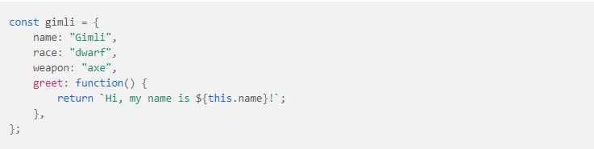

Hypertext Markup Language (HTML) is the language of the web, without HTML you wouldn’t have a website. HTML defines the content and structure of your website. Using a body for an analogy, HTML would be your skeleton, holding everything together and providing a base to hang everything off. If HTML is the skeleton to our body, then Cascading Style Sheets (CSS) is the skin. CSS is used to change the look and feel of websites. It is where you define your colour schemes, fonts, spacing, layouts and more.
Control Flow Structures are an important aspect of programming languages that allow your code to take certain actions based on a variety of scenarios. My personal favorite example of control flow and loop is the human body. In normal conditions, our body maintains an ideal temperature but when you get cold, your body shivers to heat up. Similarly, when you’re too hot, you sweat to cool down. This goes on in a loop till the body has reached a desired temperature. The process restarts if the temperature changes. Another example is the temperature control for a house. When the temperature of the house falls too low, the thermostat measures it and turns on a heater. When the temperature of the house is OK, the thermostat measures it and turns off a heater. When the temperature is too high, it turns on an AC.
Imagine this: you have the TV on. You don't like the show that's being streamed, and you want to change it. You also want to increase its volume. To do that, there has to be a way for you to interact with your television. And what do you use to do that? "A remote". The remote serves as the bridge which allows you interact with your television. You make the TV active and dynamic via the remote. And in the same way, JavaScript makes the HTML page active and dynamic via the DOM. Just like how the television can't do much for itself, JavaScript doesn't do much more than allow you to perform some calculations or work with basic strings. So to make an HTML document more interactive and dynamic, the script needs to be able to access the contents of the document and it also needs to know when the user is interacting with it. It does this by communicating with the browser using the properties, methods, and events in the interface called the Document Object Model, or DOM. For example, say that you want a button to change colours when it gets clicked or an image to slide when the mouse hovers over it. First, you need to reference those elements from your JavaScript. The DOM is a tree-like representation of the web page that gets loaded into the browser. It represents the web page using a series of objects. The main object is the document object, which in turn houses other objects which also house their own objects, and so on.
Summary: The DOM is a top down representation of all the elements that make up a web page. It's the interface through which your script interacts with your HTML. There are many properties and methods which you can use to get information about the DOM and manipulate it.
How do we interact with DOM? - Finding the Developer Tools in your browser Though your browser does not show you the DOM Tree as a “tree” like we saw earlier, you can see the browser’s rendition of the DOM Tree in the Developer Tools.Declaring an array:
Modifying Items in Arrays: We can overwrite any value in an array by assigning a new value using the assignment operator, just like we would with a regular variable.
Adding an Item to an Array: push() - This method adds items to the end of an array and changes the original array.
Removing an Item from an Array: pop() - This method removes the last item of an array and returns it.
Objects:An object in JavaScript is a data type that is composed of a collection of names or keys and values, represented in name:value pairs. The name:value pairs can consist of properties that may contain any data type — including strings, numbers, and Booleans — as well as methods, which are functions contained within an object.Creating an Object:
Accessing Object Properties: 
Adding, Modifying and Removing Object Properties